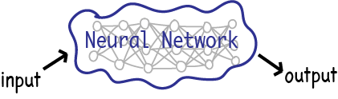
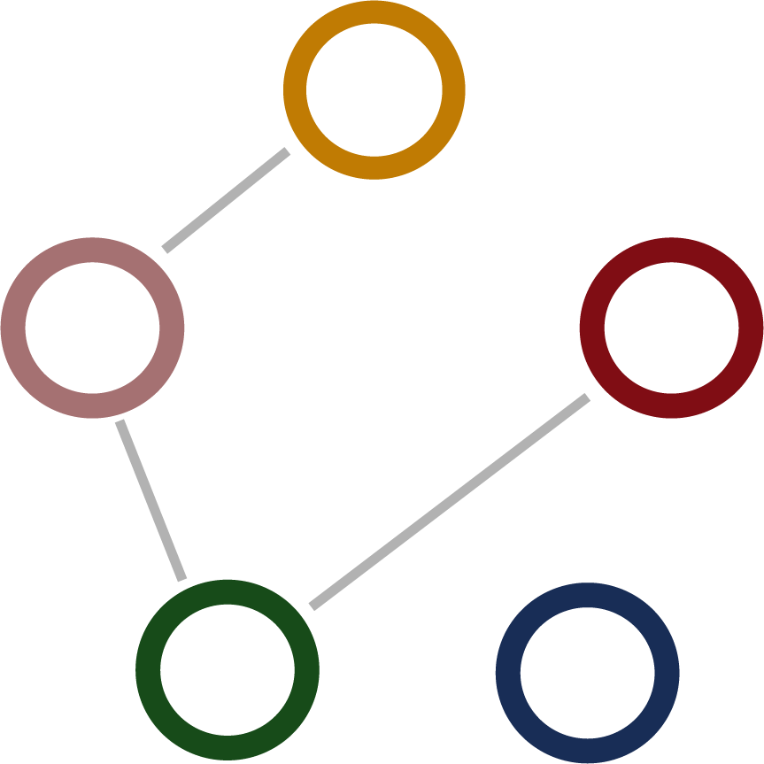

Deep Knowledge Tracing
Deep Knowledge Tracing is knowledge tracing using deep learning
But first! What is deep learning?
Deep Learning:
a computer algorithm where, given an input, the computer will
learn to answer a question about that input
using a neural network and hidden layers

But how does the neural network know what it's doing?
We train it!
We feed the network a LOT of examples and tell it the answers. Eventually, the computer will recognize the patterns and characteristics and will be able to answer on its own!
Let's do an example!
Which is an image of a constellation? Click an image!
Humans can categorize and identify often by using common sense. Why was image B a constellation? How did you know? Maybe you recognized the Big Dipper. Maybe you used deductive reasoning after seeing that image A was not of a constellation. Or maybe you used common sense, and you knew image B is of a constellation, simply beacuse it is.
But a computer cannot do this! A computer doesn't know what "stars" are, or what "trees" are. A computer doesn't have the same common sense that we do that allows us to "just know" image B is of a cosntellation. So... how does a computer learn to identify constellations?
Example: We want to be able to give the computer a picture, and have the computer tell us if the picture is of a known constellation
Click flags to expand explanation for our example
Feed the network a dataset of images, some of which are of constellations. The network will then guess if each image is of a constellation.
..................................................................................................
The computer will probably start off getting things wrong...
But we tell the network the answer after it guesses, so it learns!
Eventually the network learns what characteristics are important and how important they are!
Test if the newly trained networks works by giving it images it has never seen before, and see if it works!
................................................................................
Repeat these 3 steps until the network has adequate accuracy!
The more training you do, the more accurate the network will be, but the more resources it will take to train it!
Goal of DKT: given a student's past answers, predict if the student will get the next question right
We use DEEP LEARNING to figure it out!
Predicting a student's performance on future interactions will require a far different network than one checking for constellations.
There are a lot of complex features that need to be taken into account.
There are a lot of complicated dimensions in a DKT neural network. Let us just look at a simplified simulated DKT whose network focuses on skill mapping
Let's train our own skill network!
We begin with a bunch of student answered quiz questions and an empty network.
We feed the questions into the network, and the network slowly learns about skill types and correlations

We've given the network the entire training dataset and the network has made connections between skills
We can now test the network and use it to predict students' future answers
Let's use our trained network in some Deep Knowledge Tracing
Reminder! The goal of DKT is to use deep learning to predict if the student will get the next question right.

These jars show the likelihood that the student will answer a question of that color skill type correct. The more questions answered correctly, the more some of the jars will fill!
Disclaimer! This is a super arbitrarily made algorithm. The algorithm is usually created by the network and is far more complex. Maybe the number of balls in a jar needed to signify mastery is different, or some skills yield more balls than others
QUESTION
RIGHT/WRONG
- Answer question
- Watch balls go into jars!
6 balls for network to predict if the student will get a question right!
The Big Picture
You have now experienced the workings of a simulated DKT!
Even though you may not fully be able to visualize a fleshed out DKT (remember, there are just too many factors to take into account!), you should now have a clearer understanding of deep learning and how it is used in DEEP KNOWLEDGE TRACING!
Big Picture
- a deep learning network learned to predict a student's future performance using a dataset made up of past questions students have answered
- the network takes a lot of things into account! Although we focused on skill mapping relationships, that is just one of the things we train the network for! The network will also be trained in things like time, understanding fatigue, creating analysis algorithms, and detecting difficulty!
The network is given a student's answers and can predict the future!
And that's DEEP KNOWLEDGE TRACING! If you are interested in learning more on the subject, there are numerous articles out there for you!
Feel free to go back and retry the games and simulations until you are comfortable with the subject!